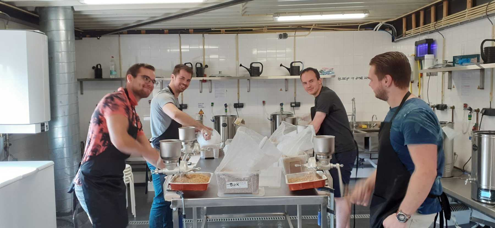
Brouw je eigen bier
Een brouwdag in onze hobbybrouwerij in Steenbergen, van het schroten van de mout tot het afvullen in de fles. U gaat naar huis met zo'n 10 liter eigen speciaalbier.
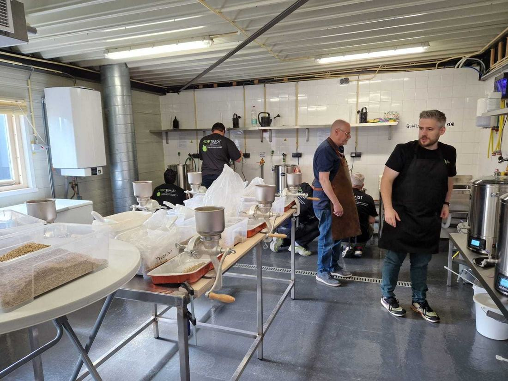
Twee zaterdagen, uw eigen bier
Met 6 automatische brouwketels op een rij brouwt u samen met andere liefhebbers. U doet het zelf, wij begeleiden elke stap.
- BrouwenZaterdag vanaf 09:00 uur: mout schroten, maischen, de wort koken met hop en overhevelen naar het gistvat.
- Bottelen14 dagen later, zaterdag vanaf 13:30 uur: bottelsuiker erbij, flesjes vullen en de kroonkurk erop.
- ProostThuis op een warme plek hergist het bier op de fles. Na 20 dagen is het klaar.
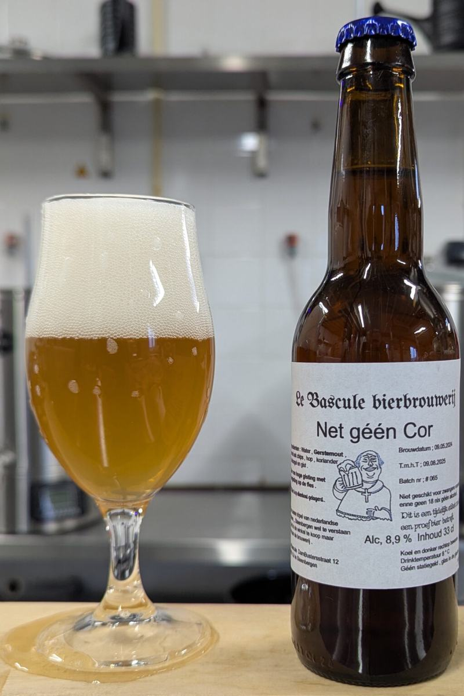
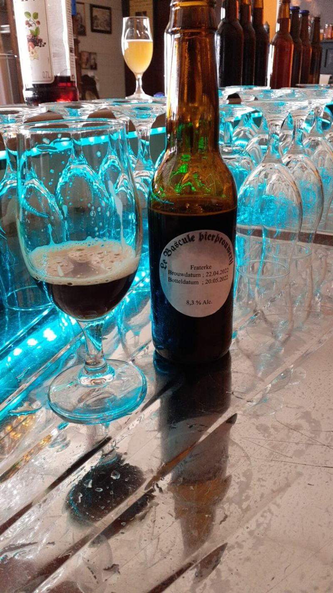
Kies uw bier
Geen pils, wel speciaalbier. Alle recepten zijn al vele malen gebrouwen. Geef een week voor uw brouwdag door welk bier u kiest, dan staat alles klaar.
Met de seizoenen mee kan er ook een seizoenbier gebrouwen worden: een kerstbier, lentebock of herfstbock.
Een kijkje in de brouwerij
Van de eerste kop koffie om 09:00 uur tot het biertje na afloop.
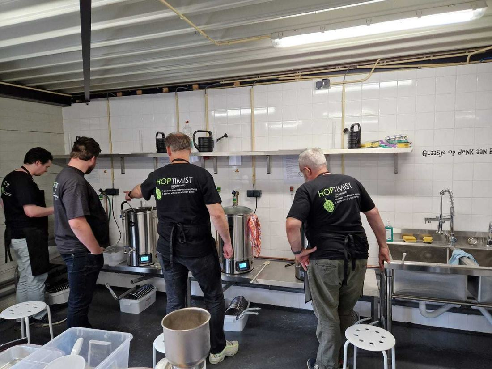
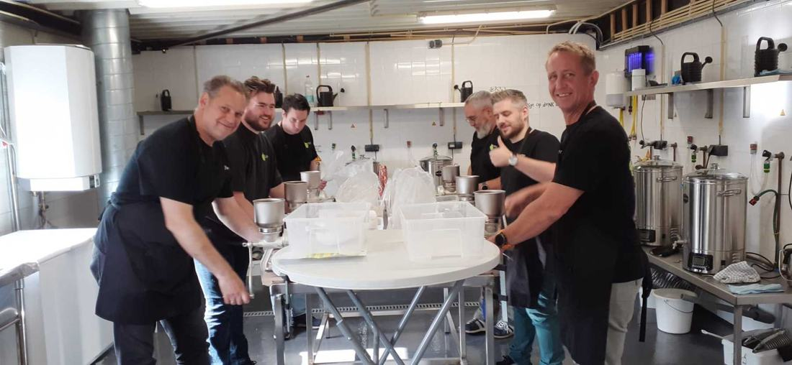
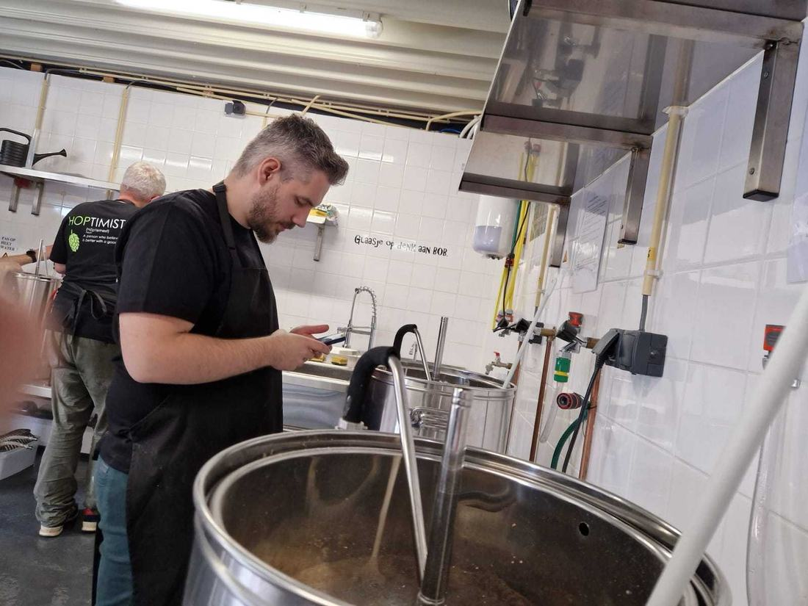
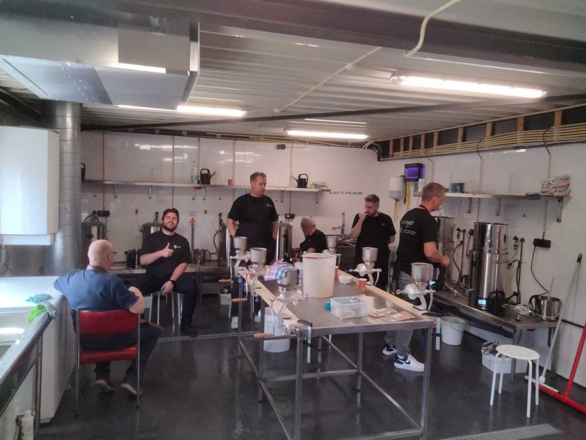
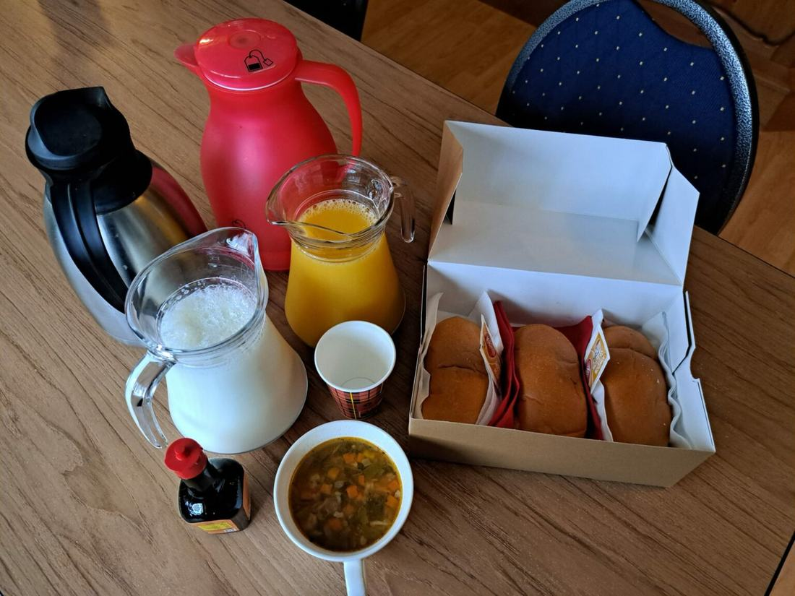
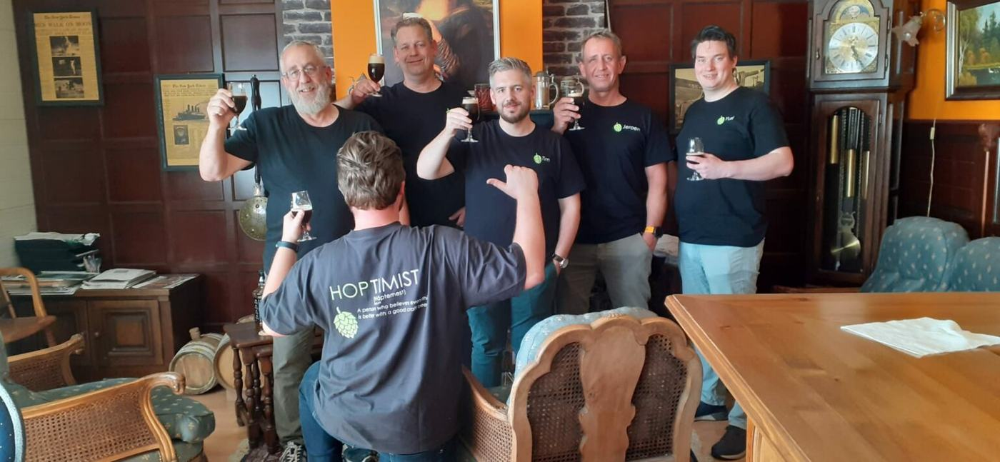
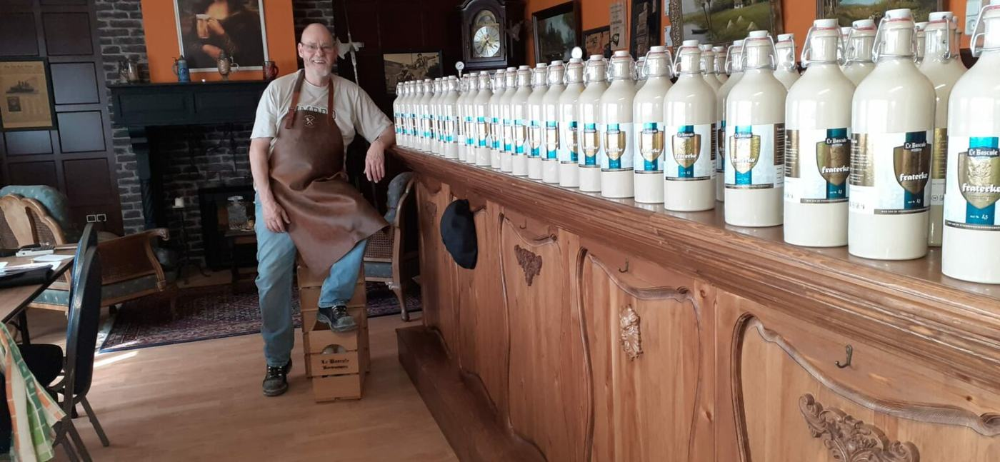
Het proeflokaal en Fraterke
In ons proeflokaal gebruikt u tijdens de brouwcursus de lunch, en na afloop drinkt u er een biertje. Wilt u de dag nog even nabespreken? Dat kan, laatste ronde om 18:45 uur.
Ons eigen Fraterke, een donker bier in een stenen fles, is verkrijgbaar bij Gall & Gall Steenbergen en diverse andere slijters in de omgeving. Fles leeg? "Gooi me dan niet weg maar zet er een droogblommeke in!"
Geef een brouwcursus cadeau
Een Le Bascule tegoedbon ter waarde van een brouwcursus, een jaar geldig. De datum plant de ontvanger zelf in overleg met ons.
Tegoedbon aanvragen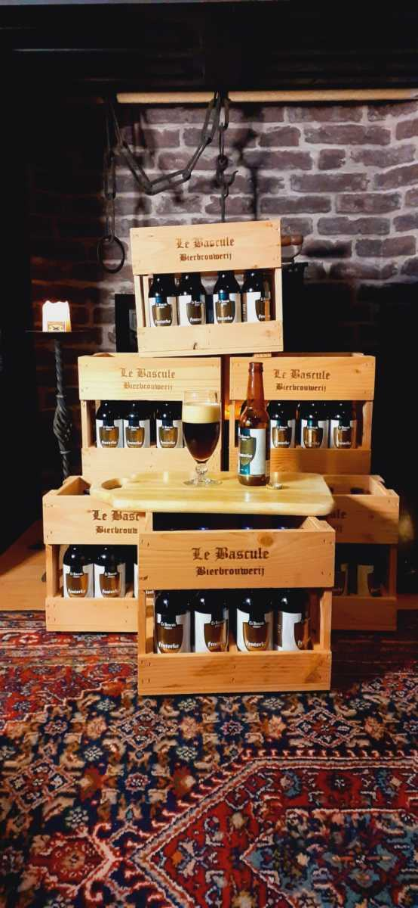
Wat brouwers zeggen
6 reviews op Google
"Vandaag een cursus bier brouwen gevolgd bij brouwerij Le Bascule. Een top ervaring. Gedreven eigenaar die je door alle stappen van het bierbrouwen begeleid afgetopt met Brabantse gezelligheid en gastvrijheid. Geen commerciël gedoe maar echtheid. En niet te vergeten zeer goed bier."
Erik de GrootGoogle"Geweldige kleine brouwerij. Leer je eigen bier brouwen of koop dat van hun. Je zit altijd goed bij Le Bascule!"
Edwin de VosGoogle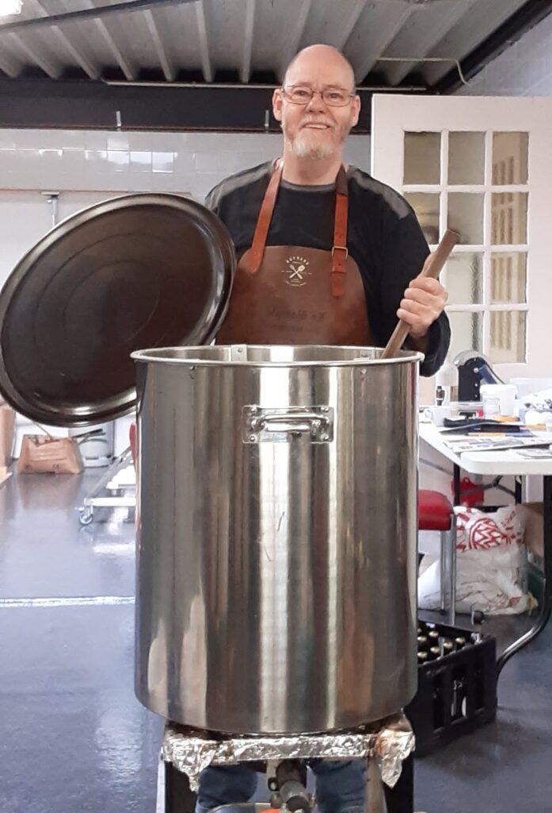
Een meubelmaker die bier brouwt
"Als het maar lekker is!"
Le Bascule (de weegschaal, spreek uit als De Baskwiel) is in november 2019 begonnen als hobby van Peter Goorden, en zoals wel meer hobby's is die uit de hand gelopen. Peter is eigenlijk meubelmaker en brouwt bier, dat hij graag deelt met andere liefhebbers.
Aan het Reinheitsgebot houden we ons niet: alle denkbare kruiden en suikers mogen erin. Al onze bieren zijn bovengistend, met een hergisting op de fles, zoals de bieren van de paters en monniken in België en Nederland.
Cursus reserveren
Geef uw gewenste zaterdag en het aantal brouwers of gasten door. Wij laten weten of de datum nog vrij is.
Liever even bellen?
Voor een datum, een tegoedbon of gewoon een vraag over bier.
4651 SJ Steenbergen4 parkeerplaatsen bij de brouwerij, meer in de Zilverhoek